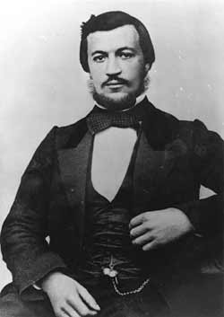

|  |
Nicolaus August Otto német feltaláló 1832-ben született Holzhausenben,
Németországban. 1860 körül Otto értesült egy új találmányról, Étienne Lenoir
gázmotorjáról, az első működőképes belső égésű motorról. Felismerte, hogy Lenoir
motorjának sokkal több alkalmazási lehetősége lenne, ha folyékony üzemanyaggal
működne, ugyanis ebben az esetben nem volna egy gázvezeték függvénye. Otto dolgozott a Lenoir-motor tökéletesítésén. Már 1861-ben egy teljesen újfajta motort tervezett, amely négyütemű ciklusban működik. 1862 januárjában Otto összeállította négyütemű motorjának működő modelljét. De nehézségei voltak, főként a gyújtással, amikor az új motort gyakorlatilag használhatóvá akarta tenni, ezért letett róla, de mégis váltig foglalkoztatta a négyütemű motor. Meg volt győződve arról, hogy egy négyütemű motor, amely begyújtás előtt összesűríti az üzemanyag és a levegő keverékét, sokkal hatékonyabb Lenoir kétütemű motorjának bármely változatánál. 1876 elején Otto végül egy jobb gyújtási módszert talált ki, s így össze tudott állítani egy működőképes négyütemű motort. Első modellje 1876 májusában készült el, a szabadalmat a következő évben adták meg rá. A négyütemű motor nagy hatásfoka és teljesítménye nyilvánvaló volt, s azonnal üzleti sikernek bizonyult. A következő tíz évben több mint 30000 darabot adtak el belőle, s a Lenoir-féle motor minden változata hamarosan elavult. Otto vagyonos emberként halt meg 1891-ben. |
| Az Otto-motor | |